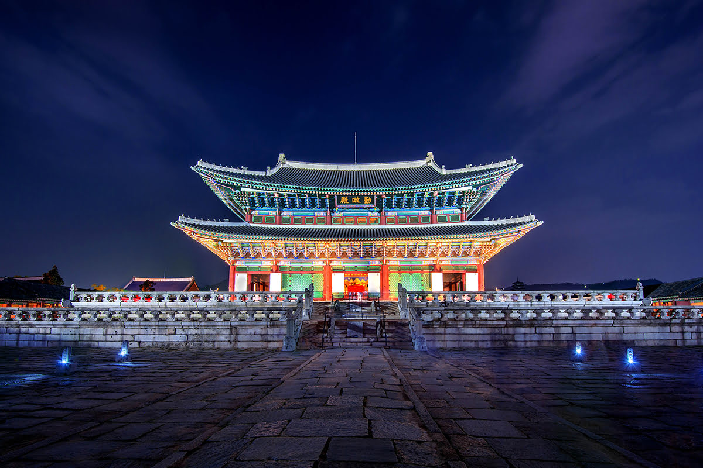
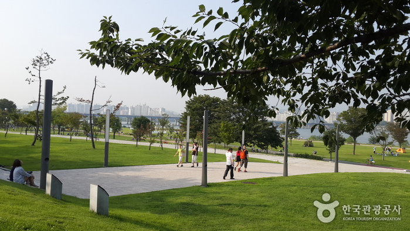
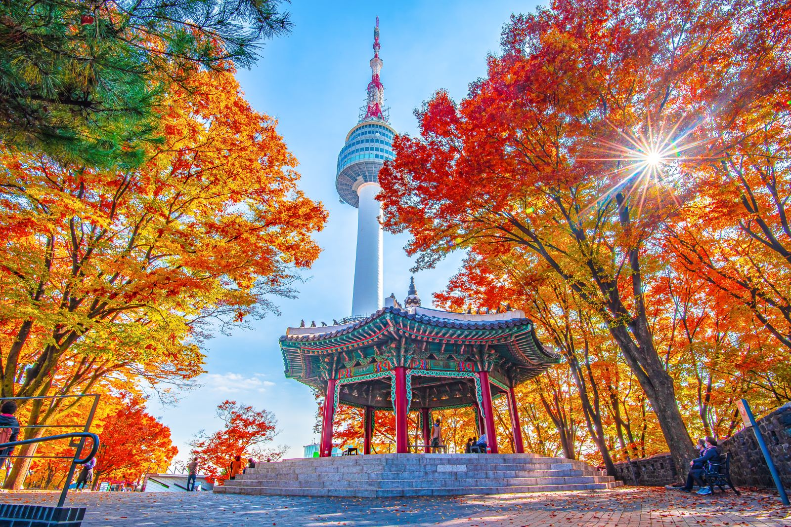

Достопримечательности Сеула
Сеул предлагает множество удивительных мест для посещения. Вот некоторые из самых известных достопримечательностей:

Дворец Кёнбоккун

Парк Ханган

Намсан Тауэр
- Дворец Кёнбоккун
- Построен в 1395 году.
- Является крупнейшим среди пяти великих дворцов Сеула.
- Парк Ханган
- Один из самых популярных парков вдоль реки Ханган.
- Идеально подходит для пикников и занятий спортом на свежем воздухе.
- Намсан Тауэр
- Популярное место для романтических встреч с видом на ночной Сеул.
- Знаменитая площадка с "замками любви" и великолепными видами.
Фотографии
| Дворец Кёнбоккун | |
| Парк Ханган | |
| фото | Намсан Тауэр |